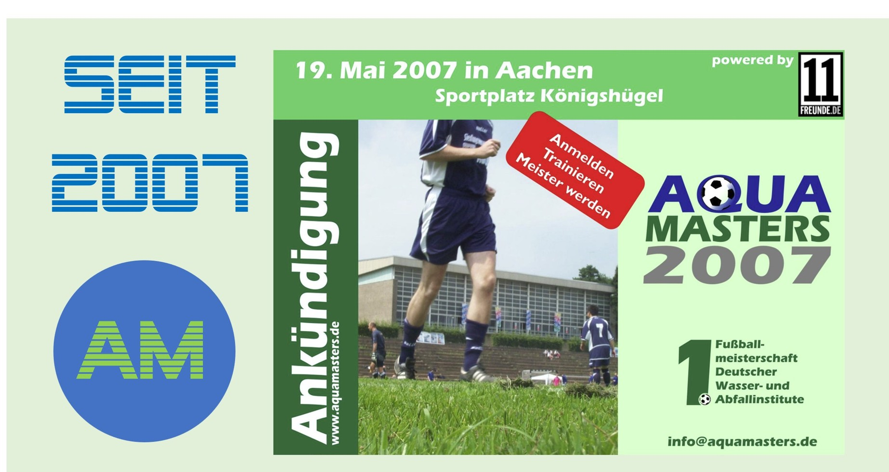

Turniere

Turniere
2007: Aachen 2008: Karlsruhe 2009: Berlin 2010: Stuttgart 2011: München 2012: Hamburg 2013: Berlin 2014: Aachen 2015: Hamburg 2016: Karlsruhe 2017: Aachen 2018: Bochum 2019: Koblenz 2020: Ausfall 2021: Ausfall 2022: Ausfall 2023: Darmstadt 2024: Karlsruhe 2025: Berlin 2026: Rostock 2027: …..

Tradition & Geschichte
Die „Aquamasters“ sind ein jährliches Fußballturnier von Instituten und Hochschulen aus dem Bereich Wasserwirtschaft, Siedlungswasserwirtschaft und Abfalltechnik im deutschsprachigen Raum. Es dient sowohl dem sportlichen Wettbewerb als auch dem persönlichen Kennenlernen von und Austausch zwischen Forschenden, Studierenden und Mitarbeitenden dieser Einrichtungen. Das Turnier existiert seit 2007, wo es erstmalig in Aachen stattfand. Seitdem wird jedes Jahr (nur unterbrochen von einer Coronapause) von einer anderen Hochschule oder Einrichtung (in der Regel der Vorjahressieger) ausgerichtet. Damit sind die Aquamasters zu einem traditionsreiches Freizeit- und Netzwerkevent der Wasser- und Umweltforschung mit einem Fußballturnier als Mittelpunkt avanciert..

Teams & Institute
Platzhalter für teilnehmende Wasser- und Abfallinstitute sowie Mannschaftsvorstellungen.